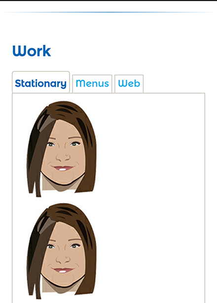

Unit 8- Responsive Wireframes
Research
Teehan+Lax's Site Critique
Desktop experience-While viewing this site desktop version, I saw that the design was extremely simple and plain, which I absolutely love. The navigation bar blends into the background of the site to give more emphasis on the content of the site, instead of being distracted by unnecessary colors and images. The navigation bar also has a hamburger menu similar to the mobile version of a site. There were very few colors used on the site including black text throughout, and blue text for the menu options, with a white background to complete the simple look. I love simplicity and user friendly sites where you can continuously scroll and get the information needed, or easily jump to the desired page using a menu.
Mobile experience- I love that there is consistency throughout both the mobile and desktop versions of this site. Both use the same layout, color scheme and format throughout. I feel that both sites had gestures that were used effectively.
Path site Critique
Desktop experience-While viewing this site on my laptop, I absolutely loved the experience. The site is bright, vibrant and straightforward. The site name is simple; the logo is the first thing to be seen, then two options to choose from. I love interactive sites that are simple in design. This site has a hover option where icons pop out behind the call to action button, which are relevant to the choice. After a choice is made, the user is directed to another page which illustrations and text describing their app, with options at the footer where the app can be downloaded.
Mobile experience-While viewing the same site from my phone, I realized the content was exactly the same; expect there were no animations behind the buttons like the desktop version. The only difference is how the space of the content was utilized. The mobile site was a continuous scroll of the same information. This site was utilized nice, except I was hoping to see more animations.
Designing Wireframes
1. Where should I place the menu?
- My menu will be placed on the top right corner on my navigation bar.
2. How do I want users to navigate my page? What will be the primary "Call to Action"?
- My users will navigate my page by either scrolling down past my bio to my portfolio, or using the hamburger menu to access the desired page. The primary call to action button is the final submit button at the end of the site or Contact Menu. This part of the page is where users can input their name, email, budget, images, and the service needed for a possible graphic design job they wish to get a quote for. The submit button, which is my call to action button, will send an email to my main inbox, and notify me on the job. I then will see the information, description and budget the client inputted. From this I can give them a price quote and begin working on the project immediately without going back and forth trying to find out what the client needs.
3. Will the color, font, or image scheme change?
- I enjoy viewing sites with consistency. My font and color schemes will remain the same throughout both the mobile and desktop version.
4. What order should the content "stack"?
- The content of my site will go as follows: the navigation bar with my logo and hamburger menu will be on top. My bio will follow, then my portfolio with images across (light box) and my contact page last, where the client can input necessary info to get a quote on a job. The hamburger menu will allow future clients to easily navigate the site.
Final Wireframes
